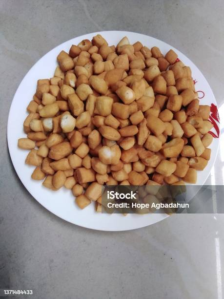

Home
Chin Chin

Description
This is a famous snacks in Nigeria that is very easy to make
Ingredients
- 8 cups all-purpose flour
- 1 cup butter, at room temperature
- 3 tablespoons butter, at room temperature
- 2 teaspoons ground nutmeg
- ½ cup milk
- 2 tablespoons milk
- 1 cup vegetable oil
Steps
- Mix flour, 1 cup plus 3 tablespoons butter,
and nutmeg together in a large bowl until
well incorporated. Stir in 1/2 cup plus 2
tablespoons milk until dough comes together.
- Roll dough 1/4-inch thick on a floured work
surface and cut into small pieces.
- Heat oil in a deep-fryer or large saucepan
to 350 degrees F (175 degrees C). Fry dough
pieces in batches until they turn golden brown
and float to the surface, 3 to 5 minutes.